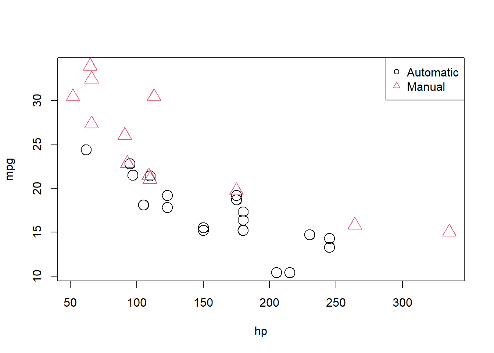

So far in each of our analyses, we have only used numeric variables as predictors. We have also only used additive models, meaning the effect any predictor had on the response was not dependent on the other predictors. In this chapter, we will remove both of these restrictions. We will fit models with multiple predictors, categorical predictors, and use models that allow predictors to interact. Instead of a single variable, will use multiple linear regression. The mathematics of multiple regression will remain largely unchanging, however, we will pay close attention to interpretation, as well as some difference in R usage.
Dummy Variables
For this example and discussion, we will briefly use the built in dataset mtcars before introducing the autompg dataset. The reason to use these easy, straightforward datasets is that they make visualization of the entire dataset trivially easy. Accordingly, the mtcars dataset is small, so we’ll quickly take a look at the entire dataset.
We will be interested in three of the variables: mpg, hp, and am.
mpg: fuel efficiency, in miles per gallon.
hp: horsepower, in foot-pounds per second.
am: transmission. Automatic or manual.
As we often do, we will start by plotting the data. We are interested in mpg as the response variable, and hp as a predictor.
plot(mpg ~ hp, data = mtcars, cex =2)
Since we are also interested in the transmission type, we could also label the points accordingly.
plot(mpg ~ hp, data = mtcars, col = am +1, pch = am +1, cex =2)legend("topright", c("Automatic", "Manual"), col =c(1, 2), pch =c(1, 2))

We now fit the SLR model
\[Y = \beta_0 + \beta_1 x_1 + \epsilon,\]
where \(Y\) is mpg and \(x_1\) is hp. For notational brevity, we drop the index \(i\) for observations.
mpg_hp_slr =lm(mpg ~ hp, data = mtcars)
We then re-plot the data and add the fitted line to the plot.
plot(mpg ~ hp, data = mtcars, col = am +1, pch = am +1, cex =2)abline(mpg_hp_slr, lwd =3, col ="grey")legend("topright", c("Automatic", "Manual"), col =c(1, 2), pch =c(1, 2))
We should notice a pattern here. The red, manual observations largely fall above the line, while the black, automatic observations are mostly below the line. This means our model underestimates the fuel efficiency of manual transmissions, and overestimates the fuel efficiency of automatic transmissions. To correct for this, we will add a predictor to our model, namely, am as \(x_2\).
In this case, we call \(x_2\) a dummy variable. A dummy variable (also called an “indicator” variable) is somewhat unfortunately named, as it is in no way “dumb”. In fact, it is actually somewhat clever. A dummy variable is a numerical variable that is used in a regression analysis to “code” for a binary categorical variable. Let’s see how this works.
First, note that am is already a dummy variable, since it uses the values 0 and 1 to represent automatic and manual transmissions. Often, a variable like am would store the character values auto and man and we would either have to convert these to 0 and 1, or, as we will see later, R will take care of creating dummy variables for us.
So, to fit the above model, we do so like any other multiple regression model we have seen before.
mpg_hp_add =lm(mpg ~ hp + am, data = mtcars)
Briefly checking the output, we see that R has estimated the three \(\beta\) parameters.
mpg_hp_add
Call:
lm(formula = mpg ~ hp + am, data = mtcars)
Coefficients:
(Intercept) hp am
26.58491 -0.05889 5.27709
Since \(x_2\) can only take values 0 and 1, we can effectively write two different models, one for manual and one for automatic transmissions.
For automatic transmissions, that is \(x_2 = 0\), we have,
\[
Y = \beta_0 + \beta_1 x_1 + \epsilon.
\]
Then for manual transmissions, that is \(x_2 = 1\), we have,
Notice that these models share the same slope, \(\beta_1\), but have different intercepts, differing by \(\beta_2\). So the change in mpg is the same for both models, but on average mpg differs by \(\beta_2\) between the two transmission types.
We’ll now calculate the estimated slope and intercept of these two models so that we can add them to a plot. Note that:
Re-plotting the data, we use these slopes and intercepts to add the “two” fitted models to the plot.
plot(mpg ~ hp, data = mtcars, col = am +1, pch = am +1, cex =2)abline(int_auto, slope_auto, col =1, lty =1, lwd =2) # add line for autoabline(int_manu, slope_manu, col =2, lty =2, lwd =2) # add line for manuallegend("topright", c("Automatic", "Manual"), col =c(1, 2), pch =c(1, 2))
We notice right away that the points are no longer systematically incorrect. The red, manual observations vary about the red line in no particular pattern without underestimating the observations as before. The black, automatic points vary about the black line, also without an obvious pattern.
They say a picture is worth a thousand words, but as a statistician, sometimes a picture is worth an entire analysis. The above picture makes it plainly obvious that \(\beta_2\) is significant, but let’s verify mathematically. Essentially we would like to test:
This is nothing new. Again, the math is the same as the multiple regression analyses we have seen before. We could perform either a \(t\) or \(F\) test here. The only difference is a slight change in interpretation. We could think of this as testing a model with a single line (\(H_0\)) against a model that allows two lines (\(H_1\)).
To obtain the test statistic and p-value for the \(t\)-test, we would use
summary(mpg_hp_add)$coefficients["am",]
Estimate Std. Error t value Pr(>|t|)
5.277085e+00 1.079541e+00 4.888270e+00 3.460318e-05
To do the same for the \(F\) test, we would use a call to anova. One way of comparing the fit of models (which accounts for the fact that one model is more “flexible” than another) is to use anova. The null hypothesis of the anova is that the two models explain the same amount of variation in the dependent variable (mpg). If we reject the F-test in the anova (if the p-value is small), then the more flexible model is actually explaining more. One caveat is that the models must be nested – one has to vary from the other only by omitting variables, not by omitting some and adding others. Here, mpg_hp_slr is nested in mpg_hp_add because it uses a subset of the variables.
anova(mpg_hp_slr, mpg_hp_add)
Analysis of Variance Table
Model 1: mpg ~ hp
Model 2: mpg ~ hp + am
Res.Df RSS Df Sum of Sq F Pr(>F)
1 30 447.67
2 29 245.44 1 202.24 23.895 3.46e-05 ***
---
Signif. codes: 0 '***' 0.001 '**' 0.01 '*' 0.05 '.' 0.1 ' ' 1
Notice that these are indeed testing the same thing, as the p-values are exactly equal. (And the \(F\) test statistic is the \(t\) test statistic squared.) This is only the case for different models that differ only by one additional variable.
Recapping some interpretations:
\(\hat{\beta}_0 = 26.5849137\) is the estimated average mpg for a car with an automatic transmission and 0hp.
\(\hat{\beta}_0 + \hat{\beta}_2 = 31.8619991\) is the estimated average mpg for a car with a manual transmission and 0hp.
\(\hat{\beta}_2 = 5.2770853\) is the estimated difference in average mpg for cars with manual transmissions as compared to those with automatic transmission, for anyhp.
\(\hat{\beta}_1 = -0.0588878\) is the estimated change in average mpg for an increase in one hp, for either transmission types.
We should take special notice of those last two. In the model,
we see \(\beta_1\) is the average change in \(Y\) for an increase in \(x_1\), no matter the value of \(x_2\). Also, \(\beta_2\) is always the difference in the average of \(Y\) for any value of \(x_1\). These are two restrictions we won’t always want, so we need a way to specify a more flexible model.
Here we restricted ourselves to a single numerical predictor \(x_1\) and one dummy variable \(x_2\). However, the concept of a dummy variable can be used with larger multiple regression models. We only use a single numerical predictor here for ease of visualization since we can think of the “two lines” interpretation. But in general, we can think of a dummy variable as creating “two models,” one for each category of a binary categorical variable.
Interactions
To remove the “same slope” restriction, we will now discuss interactions. To illustrate this concept, we will use the autompg dataset with a few modifications.
# read data frame from the webautompg =read.table("http://archive.ics.uci.edu/ml/machine-learning-databases/auto-mpg/auto-mpg.data",quote ="\"",comment.char ="",stringsAsFactors =FALSE)# give the dataframe headerscolnames(autompg) =c("mpg", "cyl", "disp", "hp", "wt", "acc", "year", "origin", "name")autompg = autompg %>%filter(hp !='?'& name !='plymouth reliant') %>%# the reliant causes some issuesmutate(hp =as.numeric(hp),domestic =as.numeric(origin==1)) %>%filter(!cyl %in%c(5,3)) %>%mutate(cyl =as.factor(cyl))
We’ve removed cars with 3 and 5 cylinders , as well as created a new variable domestic which indicates whether or not a car was built in the United States. Removing the 3 and 5 cylinders is simply for ease of demonstration later in the chapter and would not be done in practice. The new variable domestic takes the value 1 if the car was built in the United States, and 0 otherwise, which we will refer to as “foreign.” (We are arbitrarily using the United States as the reference point here.) We have also made cyl and origin into factor variables, which we will discuss later.
We’ll now be concerned with three variables: mpg, disp, and domestic. We will use mpg as the response. We can fit a model,
We will fit this model, extract the slope and intercept for the “two lines,” plot the data and add the lines.
mpg_disp_add =lm(mpg ~ disp +as.factor(domestic), data = autompg)int_for =coef(mpg_disp_add)[1]int_dom =coef(mpg_disp_add)[1] +coef(mpg_disp_add)[3]slope_for =coef(mpg_disp_add)[2]slope_dom =coef(mpg_disp_add)[2] #--> same slope!ggplot(autompg, aes(x = disp, y = mpg, col =as.factor(domestic))) +geom_point() +geom_abline(intercept = int_dom, slope = slope_dom, col ='blue') +geom_abline(intercept = int_for,slope = slope_for, col ='red') +labs(color ='Origin') +scale_color_manual(labels =c('Foreign','Domestic'), values =c('red','blue')) +theme_bw()
This is a model that allows for two parallel lines, meaning the mpg can be different on average between foreign and domestic cars of the same engine displacement, but the change in average mpg for an increase in displacement is the same for both. We can see this model isn’t doing very well here. The red line fits the red points fairly well, but the black line isn’t doing very well for the black points, it should clearly have a more negative slope. Essentially, we would like a model that allows for two different slopes.
where \(x_1\), \(x_2\), and \(Y\) are the same as before, but we have added a new interaction term \(x_1 x_2\) which multiplies \(x_1\) and \(x_2\), so we also have an additional \(\beta\) parameter \(\beta_3\).
This model essentially creates two slopes and two intercepts, \(\beta_2\) being the difference in intercepts and \(\beta_3\) being the difference in slopes. To see this, we will break down the model into the two “sub-models” for foreign and domestic cars.
These two models have both different slopes and intercepts.
\(\beta_0\) is the average mpg for a foreign car with 0disp.
\(\beta_1\) is the change in average mpg for an increase of one disp, for foreign cars.
\(\beta_0 + \beta_2\) is the average mpg for a domestic car with 0disp.
\(\beta_1 + \beta_3\) is the change in average mpg for an increase of one disp, for domestic cars.
How do we fit this model in R? There are a number of ways.
One method would be to simply create a new variable, then fit a model like any other.
autompg$x3 = autompg$disp * autompg$domestic # THIS CODE NOT RUN!do_not_do_this =lm(mpg ~ disp + domestic + x3, data = autompg) # THIS CODE NOT RUN!
You should only do this as a last resort. We greatly prefer not to have to modify our data simply to fit a model. Instead, we can tell R we would like to use the existing data with an interaction term, which it will create automatically when we use the : operator.
An alternative method, which will fit the exact same model as above would be to use the * operator. This method automatically creates the interaction term, as well as any “lower order terms,” which in this case are the first order terms for disp and domestic
mpg_disp_int2 =lm(mpg ~ disp * domestic, data = autompg)
We can quickly verify that these are doing the same thing.
We see that both the variables, and their coefficient estimates are indeed the same for both models.
summary(mpg_disp_int)
Call:
lm(formula = mpg ~ disp + domestic + disp:domestic, data = autompg)
Residuals:
Min 1Q Median 3Q Max
-10.8332 -2.8956 -0.8332 2.2828 18.7749
Coefficients:
Estimate Std. Error t value Pr(>|t|)
(Intercept) 46.05484 1.80582 25.504 < 2e-16 ***
disp -0.15692 0.01668 -9.407 < 2e-16 ***
domestic -12.57547 1.95644 -6.428 3.90e-10 ***
disp:domestic 0.10252 0.01692 6.060 3.29e-09 ***
---
Signif. codes: 0 '***' 0.001 '**' 0.01 '*' 0.05 '.' 0.1 ' ' 1
Residual standard error: 4.308 on 379 degrees of freedom
Multiple R-squared: 0.7011, Adjusted R-squared: 0.6987
F-statistic: 296.3 on 3 and 379 DF, p-value: < 2.2e-16
We see that using summary() gives the usual output for a multiple regression model. We pay close attention to the row for disp:domestic which tests,
\[
H_0: \beta_3 = 0.
\]
In this case, testing for \(\beta_3 = 0\) is testing for two lines with parallel slopes versus two lines with possibly different slopes. The disp:domestic line in the summary() output uses a \(t\)-test to perform the test.
Here we again calculate the slope and intercepts for the two lines for use in plotting.
ggplot(autompg, aes(x = disp, y = mpg, col =as.factor(domestic))) +geom_point() +geom_abline(intercept = int_dom, slope = slope_dom, col ='blue') +geom_abline(intercept = int_for,slope = slope_for, col ='red') +labs(color ='Origin') +scale_color_manual(labels =c('Foreign','Domestic'), values =c('red','blue')) +theme_bw()
We see that these lines fit the data much better, which matches the result of our tests.
So far we have only seen interaction between a categorical variable (domestic) and a numerical variable (disp). While this is easy to visualize, since it allows for different slopes for two lines, it is not the only type of interaction we can use in a model. We can also consider interactions between two numerical variables.
So, for a one unit increase in \(x_1\) (disp), the mean of \(Y\) (mpg) increases \(\beta_1 + \beta_3 x_2\), which is a different value depending on the value of \(x_2\) (hp)!
Since we’re now working in three dimensions, this model can’t be easily justified via visualizations like the previous example. Instead, we will have to rely on a test.
mpg_disp_add_hp =lm(mpg ~ disp + hp, data = autompg)mpg_disp_int_hp =lm(mpg ~ disp * hp, data = autompg)summary(mpg_disp_int_hp)
Call:
lm(formula = mpg ~ disp * hp, data = autompg)
Residuals:
Min 1Q Median 3Q Max
-10.7849 -2.3104 -0.5699 2.1453 17.9211
Coefficients:
Estimate Std. Error t value Pr(>|t|)
(Intercept) 5.241e+01 1.523e+00 34.42 <2e-16 ***
disp -1.002e-01 6.638e-03 -15.09 <2e-16 ***
hp -2.198e-01 1.987e-02 -11.06 <2e-16 ***
disp:hp 5.658e-04 5.165e-05 10.96 <2e-16 ***
---
Signif. codes: 0 '***' 0.001 '**' 0.01 '*' 0.05 '.' 0.1 ' ' 1
Residual standard error: 3.896 on 379 degrees of freedom
Multiple R-squared: 0.7554, Adjusted R-squared: 0.7535
F-statistic: 390.2 on 3 and 379 DF, p-value: < 2.2e-16
Using summary() we focus on the row for disp:hp which tests,
\[
H_0: \beta_3 = 0.
\]
Again, we see a very low p-value so we reject the null (additive model) in favor of the interaction model. We can take a closer look at the coefficients of our fitted interaction model.
coef(mpg_disp_int_hp)
(Intercept) disp hp disp:hp
52.4081997848 -0.1001737655 -0.2198199720 0.0005658269
\(\hat{\beta}_0 = 52.4081998\) is the estimated average mpg for a car with 0 disp and 0 hp.
\(\hat{\beta}_1 = -0.1001738\) is the estimated change in average mpg for an increase in 1 disp, for a car with 0 hp.
\(\hat{\beta}_2 = -0.21982\) is the estimated change in average mpg for an increase in 1 hp, for a car with 0 disp.
\(\hat{\beta}_3 = 5.658269\times 10^{-4}\) is an estimate of the modification to the change in average mpg for an increase in disp, for a car of a certain hp (or vice versa).
That last coefficient needs further explanation. Recall the rearrangement we made earlier
So, our estimate for \(\beta_1 + \beta_3 x_2\), is \(\hat{\beta}_1 + \hat{\beta}_3 x_2\), which in this case is
\[
-0.1001738 + 5.658269\times 10^{-4} x_2.
\]
This says that, for an increase of one disp we see an estimated change in average mpg of \(-0.1001738 + 5.658269\times 10^{-4} x_2\). So how disp and mpg are related, depends on the hp of the car.
So for a car with 50 hp, the estimated change in average mpg for an increase of one disp is
So far in this chapter, we have limited our use of categorical variables to binary categorical variables. Specifically, we have limited ourselves to dummy variables which take a value of 0 or 1 and represent a categorical variable numerically.
We will now discuss factor variables, which is a special way that R deals with categorical variables. With factor variables, a human user can simply think about the categories of a variable, and R will take care of the necessary dummy variables without any 0/1 assignment being done by the user.
is.factor(autompg$domestic)
[1] FALSE
Earlier when we used the domestic variable, it was not a factor variable. It was simply a numerical variable that only took two possible values, 1 for domestic, and 0 for foreign. Let’s create a new variable origin that stores the same information, but in a different way. First, we create an empty (all-NA) variable of type character. Then, we update it. Yes, we could also do this with ifelse or case_when:
Now the origin variable stores "domestic" for domestic cars and "foreign" for foreign cars.
is.factor(autompg$origin)
[1] FALSE
However, this is simply a vector of character values. A vector of car models is a character variable in R. A vector of Vehicle Identification Numbers (VINs) is a character variable as well. But those don’t represent a short list of levels that might influence a response variable. We will want to coerce this origin variable to be something more: a factor variable.
autompg$origin =as.factor(autompg$origin)
Now when we check the structure of the autompg dataset, we see that origin is a factor variable.
It seems that it doesn’t produce the same results. Right away we notice that the intercept is different, as is the the coefficient in front of disp. We also notice that the remaining two coefficients are of the same magnitude as their respective counterparts using the domestic variable, but with a different sign. Why is this happening?
It turns out, that by using a factor variable, R is automatically creating a dummy variable for us. However, it is not the dummy variable that we had originally used ourselves.
\(Y\) is mpg, the fuel efficiency in miles per gallon,
\(x_1\) is disp, the displacement in cubic inches,
\(x_2\)is a dummy variable created by R. It uses 1 to represent a foreign car.
You may recall that we saw this in action in Assignment 05 when we used model.matrix on GarageType.
So now,
\[
\hat{\beta}_0 = 33.4793709
\]
is the estimated average mpg for a domestic car with 0 disp, which is indeed the same as before.
When R created \(x_2\), the dummy variable, it used domestic cars as the reference level, that is the default value of the factor variable. So when the dummy variable is 0, the model represents this reference level, which is domestic. (R makes this choice because domestic comes before foreign alphabetically.)
So the two models have different estimated coefficients, but due to the different model representations, they are actually the same model.
Factors with More Than Two Levels
Let’s now consider a factor variable with more than two levels. In this dataset, cyl is an example.
is.factor(autompg$cyl)
[1] TRUE
levels(autompg$cyl)
[1] "4" "6" "8"
Here the cyl variable has three possible levels: 4, 6, and 8. You may wonder, why not simply use cyl as a numerical variable? You certainly could.
However, that would force the difference in average mpg between 4 and 6 cylinders to be the same as the difference in average mpg between 6 and 8 cylinders. That usually make senses for a continuous variable, but not for a discrete variable with so few possible values. In the case of this variable, there is no such thing as a 7-cylinder engine or a 6.23-cylinder engine in personal vehicles. For these reasons, we will simply consider cyl to be categorical. This is a decision that will commonly need to be made with ordinal variables. Often, with a large number of categories, the decision to treat them as numerical variables is appropriate because, otherwise, a large number of dummy variables are then needed to represent these variables.
Let’s define three dummy variables related to the cyl factor variable.
Now, let’s fit an additive model in R, using mpg as the response, and disp and cyl as predictors. This should be a model that uses “three regression lines” to model mpg, one for each of the possible cyl levels. They will all have the same slope (since it is an additive model), but each will have its own intercept.
(mpg_disp_add_cyl =lm(mpg ~ disp + cyl, data = autompg))
The question is, what is the model that R has fit here? It has chosen to use the model
\[
Y = \beta_0 + \beta_1 x + \beta_2 v_2 + \beta_3 v_3 + \epsilon,
\]
where
\(Y\) is mpg, the fuel efficiency in miles per gallon,
\(x\) is disp, the displacement in cubic inches,
\(v_2\) and \(v_3\) are the dummy variables define above.
Why doesn’t R use \(v_1\)? Essentially because it doesn’t need to. To create three lines, it only needs two dummy variables since it is using a reference level, which in this case is a 4 cylinder car. The three “sub models” are then:
4 Cylinder: \(Y = \beta_0 + \beta_1 x + \epsilon\)
Notice that they all have the same slope. However, using the two dummy variables, we achieve the three intercepts.
\(\beta_0\) is the average mpg for a 4 cylinder car with 0 disp.
\(\beta_0 + \beta_2\) is the average mpg for a 6 cylinder car with 0 disp.
\(\beta_0 + \beta_3\) is the average mpg for a 8 cylinder car with 0 disp.
So because 4 cylinder is the reference level, \(\beta_0\) is specific to 4 cylinders, but \(\beta_2\) and \(\beta_3\) are used to represent quantities relative to 4 cylinders.
As we have done before, we can extract these intercepts and slopes for the three lines, and plot them accordingly.
The odd result here is that we’re estimating that 8 cylinder cars have better fuel efficiency than 6 cylinder cars at any displacement! The dotted blue line is always above the dashed grey line. That doesn’t seem right. Maybe for very large displacement engines that could be true, but that seems wrong for medium to low displacement.
To attempt to fix this, we will try using an interaction model, that is, instead of simply three intercepts and one slope, we will allow for three slopes. Again, we’ll let R take the wheel, (no pun intended) then figure out what model it has applied.
(mpg_disp_int_cyl =lm(mpg ~ disp * cyl, data = autompg))
Interpreting some parameters and coefficients then:
\((\beta_0 + \beta_2)\) is the average mpg of a 6 cylinder car with 0 disp
\((\hat{\beta}_1 + \hat{\gamma}_3) = -0.1306935 + 0.1081714 = -0.0225221\) is the estimated change in average mpg for an increase of one disp, for an 8 cylinder car.
So, as we have seen before \(\beta_2\) and \(\beta_3\) change the intercepts for 6 and 8 cylinder cars relative to the reference level of \(\beta_0\) for 4 cylinder cars.
Now, similarly \(\gamma_2\) and \(\gamma_3\) change the slopes for 6 and 8 cylinder cars relative to the reference level of \(\beta_1\) for 4 cylinder cars.
Once again, we extract the coefficients and plot the results.
This looks much better! We can see that for medium displacement cars, 6 cylinder cars now perform better than 8 cylinder cars, which seems much more reasonable than before.
To completely justify the interaction model (i.e., a unique slope for each cyl level) compared to the additive model (single slope), we can perform an \(F\)-test. Notice first, that there is no \(t\)-test that will be able to do this since the difference between the two models is not a single parameter.
We will test,
\[
H_0: \gamma_2 = \gamma_3 = 0
\]
which represents the parallel regression lines we saw before,
\[
Y = \beta_0 + \beta_1 x + \beta_2 v_2 + \beta_3 v_3 + \epsilon.
\]
Again, this is a difference of two parameters, thus no \(t\)-test will be useful.
anova(mpg_disp_add_cyl, mpg_disp_int_cyl)
Analysis of Variance Table
Model 1: mpg ~ disp + cyl
Model 2: mpg ~ disp * cyl
Res.Df RSS Df Sum of Sq F Pr(>F)
1 379 7299.5
2 377 6551.7 2 747.79 21.515 1.419e-09 ***
---
Signif. codes: 0 '***' 0.001 '**' 0.01 '*' 0.05 '.' 0.1 ' ' 1
As expected, we see a very low p-value, and thus reject the null. We prefer the interaction model over the additive model.
We see there is a difference of two parameters, which is also displayed in the resulting ANOVA table from R. Notice that the following two values also appear on the ANOVA table.
nrow(autompg) -length(coef(mpg_disp_int_cyl))
[1] 377
nrow(autompg) -length(coef(mpg_disp_add_cyl))
[1] 379
Parameterization
So far we have been simply letting R decide how to create the dummy variables, and thus R has been deciding the parameterization of the models. To illustrate the ability to use alternative parameterizations, we will recreate the data, but directly creating the dummy variables ourselves.
v1, v2, and v3 are dummy variables as defined above.
First let’s try to fit an additive model using x as well as the three dummy variables.
lm(y ~ x + v1 + v2 + v3, data = new_param_data)
Call:
lm(formula = y ~ x + v1 + v2 + v3, data = new_param_data)
Coefficients:
(Intercept) x v1 v2 v3
32.96326 -0.05217 2.03603 -1.59722 NA
What is happening here? Notice that R is essentially ignoring v3, but why? Well, because R uses an intercept, it cannot also use v3. This is because
\[
\boldsymbol{1} = v_1 + v_2 + v_3
\]
which means that \(\boldsymbol{1}\), \(v_1\), \(v_2\), and \(v_3\) are linearly dependent. This would make the \(X^\top X\) matrix singular, but we need to be able to invert it to solve the normal equations and obtain \(\hat{\beta}.\) With the intercept, v1, and v2, R can make the necessary “three intercepts”. So, in this case v3 is the reference level.
If we remove the intercept, then we can directly obtain all “three intercepts” without a reference level.
lm(y ~0+ x + v1 + v2 + v3, data = new_param_data)
Call:
lm(formula = y ~ 0 + x + v1 + v2 + v3, data = new_param_data)
Coefficients:
x v1 v2 v3
-0.05217 34.99929 31.36604 32.96326
Here, we are fitting the model
\[
Y = \mu_1 v_1 + \mu_2 v_2 + \mu_3 v_3 + \beta x +\epsilon.
\]
Thus we have:
4 Cylinder: \(Y = \mu_1 + \beta x + \epsilon\)
6 Cylinder: \(Y = \mu_2 + \beta x + \epsilon\)
8 Cylinder: \(Y = \mu_3 + \beta x + \epsilon\)
We could also do something similar with the interaction model, and give each line an intercept and slope, without the need for a reference level.
They all fit the same model, importantly each using six parameters, but the coefficients mean slightly different things in each. However, once they are interpreted as slopes and intercepts for the “three lines” they will have the same result.
Use ?all.equal to learn about the all.equal() function, and think about how the following code verifies that the residuals of the two models are the same.
all.equal(fitted(lm(mpg ~ disp * cyl, data = autompg)),fitted(lm(mpg ~0+ cyl + disp : cyl, data = autompg)))
[1] TRUE
TRY IT
Let’s try some interaction terms using our Ames data from before (linked at the top of this page). For now, we’ll stick to interacting square footage (GrLivArea) with dummy or factor variables. As usual, we’re trying to predict SalePrice.
What factor variables should we use? Here are some options:
CentralAir (binary, but stored as “Y”/“N”)
Neighborhood (25 different neighborhoods, stored as chr)
YearBuilt (not a factor, but case_when can be used to make a few bins based on year)
OverallCond (subjective 1-9 scale, but stored as an integer – use as.factor!)
??? Anything else interesting you see?
I’d like you to choose one of the above and run two models: one with GrLivArea and your chosen factor variable, and one with GrLivArea, your chosen factor variable, and the interaction of the two. Once you have run these:
Be prepared to interpret the coefficients on the “baseline” coefficient on GrLivArea, as well as one of the coefficients on the interaction.
Test the two models using anova(mod1, mod2) and tell us if your more flexible model is statistically better than the less flexible model.
Building Larger Models
Now that we have seen how to incorporate categorical predictors as well as interaction terms, we can start to build much larger, much more flexible models which can potentially fit data better.
\(x_3\) is domestic, which is a dummy variable we defined, where 1 is a domestic vehicle.
First thing to note here, we have included a new term \(x_1 x_2 x_3\) which is a three-way interaction. Interaction terms can be larger and larger, up to the number of predictors in the model.
Since we are using the three-way interaction term, we also use all possible two-way interactions, as well as each of the first order (main effect) terms. This is the concept of a hierarchy. Any time a “higher-order” term is in a model, the related “lower-order” terms should also be included. Mathematically their inclusion or exclusion is sometimes irrelevant, but from an interpretation standpoint, it is best to follow the hierarchy rules.
Let’s do some rearrangement to obtain a “coefficient” in front of \(x_1\).
which is even more flexible. Now changing \(x_1\) (disp) has a different effect on \(Y\) (mpg), depending on the values of \(x_2\) and \(x_3\), but in a more flexible way which we can see with some more rearrangement. Now the “coefficient” in front of \(x_3\) in this “coefficient” is dependent on \(x_2\).
We fit the null model in R as two_way_int_mod. Again, we check to see if the big model is any more explanatory:
two_way_int_mod =lm(mpg ~ disp * hp + disp * domestic + hp * domestic, data = autompg)#two_way_int_mod = lm(mpg ~ (disp + hp + domestic) ^ 2, data = autompg)anova(two_way_int_mod, big_model)
Analysis of Variance Table
Model 1: mpg ~ disp * hp + disp * domestic + hp * domestic
Model 2: mpg ~ disp * hp * domestic
Res.Df RSS Df Sum of Sq F Pr(>F)
1 376 5673.2
2 375 5645.6 1 27.599 1.8332 0.1766
We see the p-value is somewhat large, so we would fail to reject. We prefer the smaller, less flexible, null model, without the three-way interaction.
A quick note here: the full model does still “fit better.” Notice that it has a smaller RMSE than the null model, which means the full model makes smaller (squared) errors on average.
mean(resid(big_model) ^2)
[1] 14.74053
mean(resid(two_way_int_mod) ^2)
[1] 14.81259
However, it is not much smaller. We could even say that, the difference is insignificant. This is an idea we will return to later in greater detail.
Now that we have chosen the model without the three-way interaction, can we go further? Do we need the two-way interactions? Let’s test
We fit the null model in R as additive_mod, then use anova() to perform an \(F\)-test as usual.
additive_mod =lm(mpg ~ disp + hp + domestic, data = autompg)anova(additive_mod, two_way_int_mod)
Analysis of Variance Table
Model 1: mpg ~ disp + hp + domestic
Model 2: mpg ~ disp * hp + disp * domestic + hp * domestic
Res.Df RSS Df Sum of Sq F Pr(>F)
1 379 7369.7
2 376 5673.2 3 1696.5 37.478 < 2.2e-16 ***
---
Signif. codes: 0 '***' 0.001 '**' 0.01 '*' 0.05 '.' 0.1 ' ' 1
Here the p-value is small, so we reject the null, and we prefer the full (alternative) model. Of the models we have considered, our final preference is for